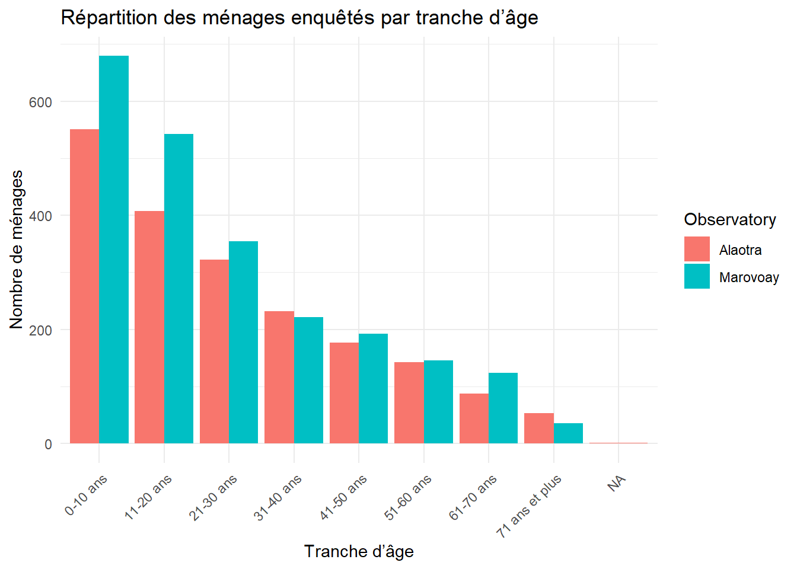
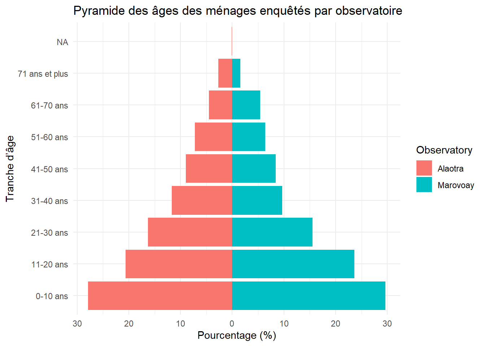

Afin de s’assurer si les positions dans l’identifiant des ménages correspondent bien à la structure formée par le code observatoire, le code commune et le code des hameaux, quelques vérifications s’imposent, notamment sur le nombre de caractères constituant ces codes.
Code
# Vérification des nombres de position dans j0, j4_a, j41source("01_apurement_j5_j0_j4a_j41.R")result <-length_analysis(res_deb) result$grouped_table %>%gt() %>%tab_header( title ="Occurrences by Obs, hh_ID, village, commune lengths" ) %>%cols_label( j0 ="Obs", j0_length ="Obs_length",j5_length ="hh_ID_length", j4_a_length ="Village_length", j41_length ="Commune_length", n ="Count" )
Occurrences by Obs, hh_ID, village, commune lengths
Taille moyenne des ménages par hameau et selon l'observatoire
Hameau
Taille moyenne
Marovoay
Ampijoroa Ambalakida
4.32
Ampijoroa Andolobe
6.00
Ampijoroa Antanambao
6.07
Ampijoroa Centre
4.93
Ampijoroa Morafeno
4.56
Bepako Ambany antsinanana
4.00
Bepako Ambany atsimo
3.76
Bepako Ambodisakoa
4.72
Bepako Ambony atsinanana
4.73
Bepako Atsimon-dalana
4.69
Bepako Avara-dalana
3.97
MADIROMIONGANA AMBARARATAFOTSY
3.00
Madiromiongana
3.13
Madiromiongana Ambararatafotsy
4.40
Madiromiongana Ambonara II
3.40
Madiromiongana Bongomena
4.00
Madiromiongana Soamanonga
5.00
Madiromiongana Tsaratanteraka
4.06
Madiromiongana Tsivikinina
4.22
Maroala Ambomiray
4.25
Maroala Antafia
4.40
Maroala Antanandava
4.67
Maroala Centre
4.04
Maroala Morafeno
5.84
Maroala Soamandroso
4.40
Alaotra
Ambatoharanana
4.03
Ambatomanga
4.03
Ambodivoara
3.86
Ambohidrony
3.81
Analamiranga
3.98
Avaradrano
3.76
Feramanga Atsimo
3.81
Mangabe
4.03
2.2.3 Structure par âge
Nous allons voir la répartition des ménages par tranche d’âge par observatoire.
Code
# Tableau de répartition des ménages par tranche d'âge selon les observatoireshh_age <- res_deb %>%left_join(res_m_a, by="j5") %>%mutate(j0 =as.character(j0),Observatory =case_when( j0 =="3"~"Marovoay", j0 =="21"~"Alaotra",TRUE~ j0 ),AgeGroup =case_when( m5 <=10~"0-10 ans",between(m5, 11, 20) ~"11-20 ans",between(m5, 21, 30) ~"21-30 ans",between(m5, 31, 40) ~"31-40 ans",between(m5, 41, 50) ~"41-50 ans",between(m5, 51, 60) ~"51-60 ans",between(m5, 61, 70) ~"61-70 ans", m5 >=71~"71 ans et plus",TRUE~NA_character_ ) ) %>%group_by(Observatory, AgeGroup) %>%summarise(n =n(), .groups ="drop" ) %>%group_by(Observatory) %>%mutate(Percent =round(n /sum(n) *100, 1) ) %>%arrange(Observatory, AgeGroup)# Créer un tableau avec gt gt_hh_age <-gt(hh_age) %>%tab_header( title ="Répartition des ménages par tranche d'âge selon les observatoires", ) %>%fmt_number( columns = Percent, decimals =0, suffixing =TRUE ) %>%tab_footnote( footnote ="Percent (%)", locations =cells_column_labels(columns = Percent) )gt_hh_age
Répartition des ménages par tranche d'âge selon les observatoires
AgeGroup
n
Percent1
Alaotra
0-10 ans
551
28
11-20 ans
407
21
21-30 ans
322
16
31-40 ans
232
12
41-50 ans
177
9
51-60 ans
143
7
61-70 ans
88
4
71 ans et plus
53
3
NA
2
0
Marovoay
0-10 ans
679
30
11-20 ans
542
24
21-30 ans
355
16
31-40 ans
222
10
41-50 ans
193
8
51-60 ans
146
6
61-70 ans
124
5
71 ans et plus
36
2
1 Percent (%)
Remarques :
2 “NA” trouvé dans tranche d’âge à corriger pour Alaotra;
Tableau à améliorer en ajoutant des sous-totaux et une ligne “total”.
Nous allons voir la répartition des ménages par tranche d’âge par hameau et par observatoire.
Code
# Tableau de répartition des ménages par tranche d'âge selon les observatoireshh_age <- res_deb %>%left_join(res_m_a, by="j5") %>%mutate(j0 =as.character(j0),Observatory =case_when( j0 =="3"~"Marovoay", j0 =="21"~"Alaotra",TRUE~ j0 ),AgeGroup =case_when( m5 <=10~"0-10 ans",between(m5, 11, 20) ~"11-20 ans",between(m5, 21, 30) ~"21-30 ans",between(m5, 31, 40) ~"31-40 ans",between(m5, 41, 50) ~"41-50 ans",between(m5, 51, 60) ~"51-60 ans",between(m5, 61, 70) ~"61-70 ans", m5 >=71~"71 ans et plus",TRUE~NA_character_ ) ) %>%group_by(Observatory, AgeGroup) %>%summarise(n =n(), .groups ="drop" ) %>%group_by(Observatory) %>%mutate(Percent =round(n /sum(n) *100, 1) ) %>%arrange(Observatory, AgeGroup)# Créer un tableau avec gt gt_hh_age <-gt(hh_age) %>%tab_header( title ="Répartition des ménages par tranche d'âge selon les observatoires", ) %>%fmt_number( columns = Percent, decimals =0, suffixing =TRUE ) %>%tab_footnote( footnote ="Percent (%)", locations =cells_column_labels(columns = Percent) )gt_hh_age
Répartition des ménages par tranche d'âge selon les observatoires
AgeGroup
n
Percent1
Alaotra
0-10 ans
551
28
11-20 ans
407
21
21-30 ans
322
16
31-40 ans
232
12
41-50 ans
177
9
51-60 ans
143
7
61-70 ans
88
4
71 ans et plus
53
3
NA
2
0
Marovoay
0-10 ans
679
30
11-20 ans
542
24
21-30 ans
355
16
31-40 ans
222
10
41-50 ans
193
8
51-60 ans
146
6
61-70 ans
124
5
71 ans et plus
36
2
1 Percent (%)
=> On va voir les graphiques
Code
# Histogramme : nombre de ménages par tranche d’âge et observatoire ggplot(hh_age, aes(x = AgeGroup, y = n, fill = Observatory)) +geom_col(position ="dodge") +labs( title ="Répartition des ménages enquêtés par tranche d’âge", x ="Tranche d’âge", y ="Nombre de ménages" ) +theme_minimal() +theme(axis.text.x =element_text(angle =45, hjust =1))

Code
# Histogramme avec pourcentages ggplot(hh_age, aes(x = AgeGroup, y = Percent, fill = Observatory)) +geom_col(position ="dodge") +labs( title ="Répartition des ménages enquêtés par tranche d’âge", x ="Tranche d’âge", y ="Pourcentage (%)" ) +theme_minimal() +theme(axis.text.x =element_text(angle =45, hjust =1))
Code
# Pyramide des âges par observatoire ggplot(hh_age, aes(x = AgeGroup, y =ifelse(Observatory =="Marovoay", Percent, -Percent), fill = Observatory)) +geom_col() +coord_flip() +labs( title ="Pyramide des âges des ménages enquêtés par observatoire",x ="Tranche d’âge",y ="Pourcentage (%)" ) +scale_y_continuous(labels = abs) +theme_minimal()

2.2.4 Origine
2.3 Caractéristiques des chefs de ménages
2.3.1 Situation matrimoniale
2.3.2 Niveau d’éducation
2.3.3 Activités principales des Chefs de ménage
2.4 Caractéristiques des autres membres de ménages